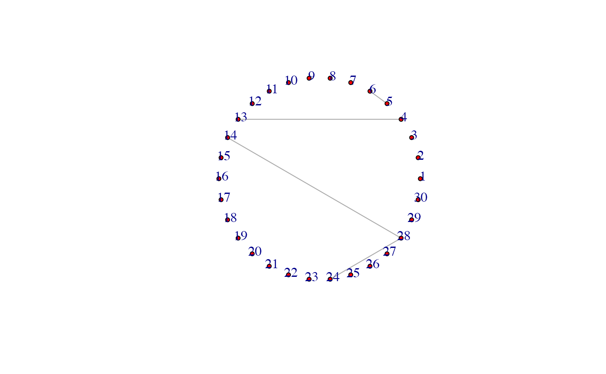

inference.RdInference() is the function to conduct simultaneous inference of estimated partial correlations.
inference(list, alpha = 0.05)A list returned by either `PCGII()` or `clevel()`.
A pre-determined False Discovery Rate. Nominal FDR is set at 0.05 by default.
An adjacency matrix of significant partial correlations.
library(igraph)
library(tidyverse)
library(PCGII)
library(mvtnorm)
# Simulating data
set.seed(1234567)
n=50 # sample size
p=30 # number of nodes
omega=make_random_precision_mat(eta=.01, p=p)
# population covariance matrix, which is used to generate data
Sigma=solve(omega)
# simulate expression data
X = rmvnorm(n = n, sigma = Sigma)
lam=2*sqrt(log(p)/n) ## fixed lambda
# directed prior network
prior_set=as.data.frame(matrix(data=c(5,6, 28,24), nrow=2, ncol=2, byrow = TRUE))
colnames(prior_set)=c("row", "col")
prior_set=undirected_prior(prior_set)
PCGII_out=PCGII(df=X, prior=prior_set, lambda = lam)
inference_out=inference(list=PCGII_out)
diag(inference_out)=0
net=inference_out %>% graph_from_adjacency_matrix(mode = "undirected")
net %>% plot(vertex.size=4, vertex.label.dist=0.5, vertex.color="red", edge.arrow.size=0.5, layout=layout_in_circle(net))
